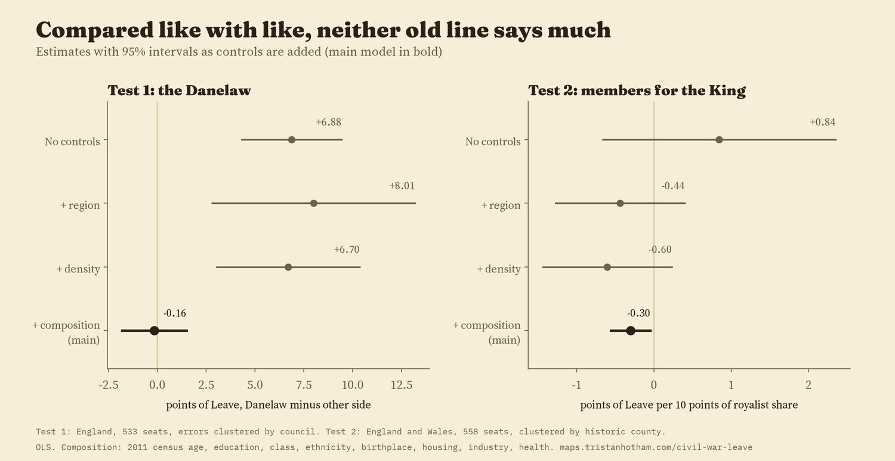
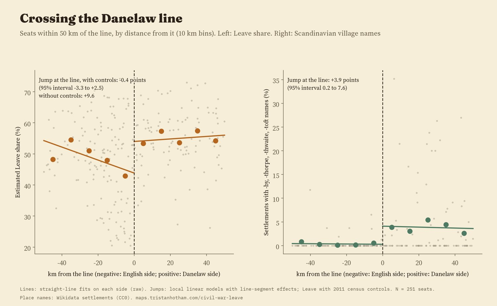
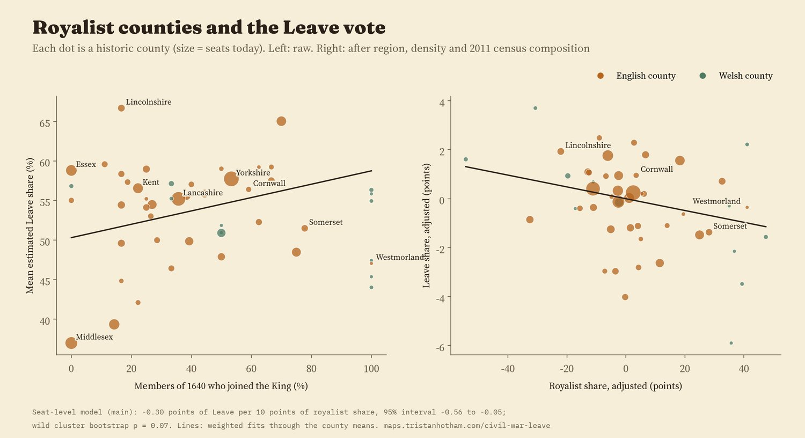
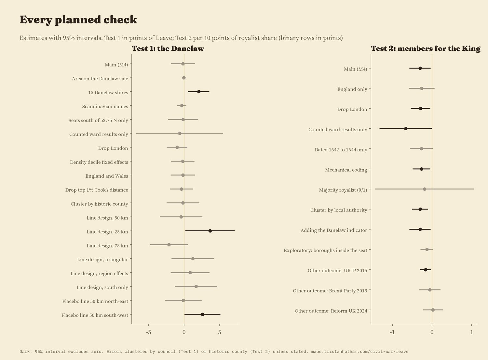

The 2016 vote in every 2010 seat in England and Wales, with the Danelaw line of Alfred and Guthrum and the side each county's members took in the Civil War. Switch the colouring with the buttons; tap a seat, county or borough.
Every so often a map goes round that sets the 2016 referendum beside something very old: the Danelaw, where Viking law once ran, or the counties that held for the King against Parliament in the Civil War. The resemblance can look uncanny. I wanted to know whether it survives a fair test. So I wrote down, before running any model on the vote, exactly how I would test two old fault lines against the estimated Leave share of every 2010 constituency in England and Wales, and then ran that plan once.
In the 880s Alfred and the Viking leader Guthrum agreed a boundary: up the Thames, up the Lea to its source, straight to Bedford, then up the Ouse to Watling Street. Beyond that, the usual maps follow Watling Street to Chester. I drew that line and asked which side each seat lies on: 275 seats in England are on the Danelaw side and 258 are not. The line is real in one way you can still see: 98% of the villages and hamlets with Scandinavian name endings, the -bys, -thorpes, -thwaites and -tofts, are on the Danelaw side.
On average, seats on the Danelaw side were estimated to vote Leave by 6.9 points more (56.9% against 50.0%). But the Danelaw side is also whiter, less likely to have a degree and less like London. Comparing each seat with others in the same region and with a similar population density and 2011 census profile, the gap is -0.16 points, with a 95% interval from -1.8 to 1.5. The old line adds nothing that today's places do not already explain.

Estimates as controls are added. The bold row is the main model I set out in advance.
A second way to test a border is to stand on it: compare seats just either side. Within 251 seats near the line, the jump in Leave share at the line is -0.4 points (95% interval -3.3 to 2.5) once the census controls are in. Without them it is 9.6 points, because the two sides are different places today: the Danelaw side of the line is less dense, further from big cities and less likely to have a degree. The jump also changes with how wide a strip I use, and a fake line drawn 50 km to the south-west shows a jump of its own. So the border design cannot tell a line apart from the ordinary drift of places across the map. The Scandinavian names, by contrast, do jump at the line.

Seats within 50 km of the line, by distance from it. The names jump; the vote, once like is compared with like, does not.
No clean map of who held what in 1643 was available to me as data, so I used people instead. The Long Parliament met in 1640. When war came, members who sided with the King were "disabled" from sitting. Going through the list of members elected in 1640, I counted 201 of the 507 seats whose members went over to the King, a few by hand where the list says a member was killed fighting for him before he could be disabled. In Wales it was 17 of 24, the same as a published count. Then I gave each historic county the share of its members who joined the King: from none in 4 counties (Bedfordshire, Denbighshire, Essex, Middlesex) to all of them in 8.
Without controls, seats in more royalist counties were slightly more Leave, but not clearly (0.84 points per 10 points of royalist share, interval -0.66 to 2.35). In the main model the sign turns: -0.30 points (interval -0.56 to -0.05). That is small, about 0.7 points of Leave for a one standard deviation more royalist county, and it is fragile: with a bootstrap suited to the 49 counties the p value is 0.07, and it is not significant for England alone, for disablements dated 1642 to 1644 only, or for a simple majority royalist or not. If anything, the Cavalier counties leaned very slightly towards Remain, which is the opposite of the popular story, and too weak to lean on.

Each dot is a historic county. Middlesex, with no members for the King, is also the least Leave; once London's make-up is accounted for it sits near the middle.
For the Danelaw, 10 planned checks agree on no gap but one: the fifteen shires the medieval law lists put under Danish law (which include Buckinghamshire and Middlesex but leave out Lancashire and the North East) show a gap of 2.1 points. A different map of the Danelaw gives a different answer, which is a reason for caution about all of them. For the Civil War, 5 of 8 checks give a significant negative estimate, three give a smaller negative one whose interval crosses zero, and UKIP's 2015 vote shows the same small negative link while the Brexit Party in 2019 and Reform UK in 2024 show none.

Every planned check. Dark rows exclude zero.
The vote. Leave share by constituency is Chris Hanretty's estimate from council results, the standard figure for 2010 seats. Controls come from the 2011 census: age, qualifications, class, ethnicity, birthplace, housing, industry and health, with population density and distance to a city.
The Danelaw. The treaty text gives the line as far as Watling Street; beyond that I follow the conventional line along Watling Street and the Roman road to Chester. I also tried the fifteen shires of the medieval lists and the share of Scandinavian place-names in each seat.
The Civil War. The 1640 list of members gives each seat's members and notes on what became of them. A member noted as "disabled" counts for the King, with ten hand decisions that I list in the code. Each 2010 seat takes its historic county's share. County Durham sent no members in 1640 and is left out.
What this cannot say. These are associations across places, not causes. Members of Parliament were gentry, not the people, and a county's members are not a map of who held the ground in 1643. The Danelaw boundary beyond Watling Street, and how long any of it lasted, are uncertain. And controlling for today's census asks only whether the old lines add something beyond what places are now; if history shaped who lives where, that part is in the controls.